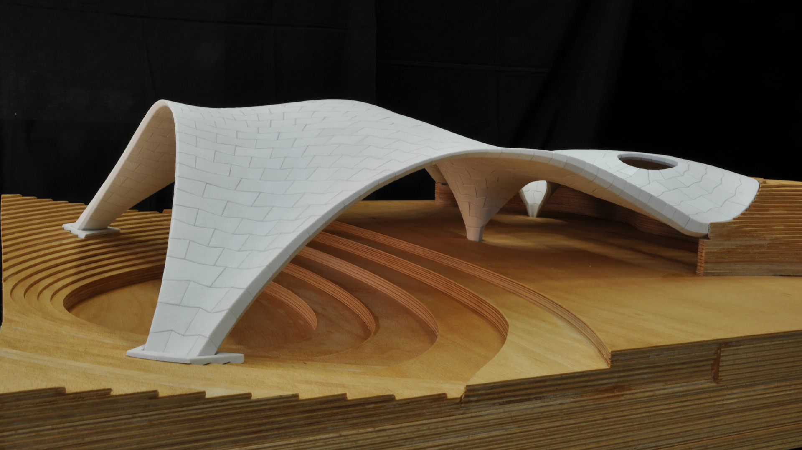

MLK Jr. Park Stone Vault

show: pattern from constrained triangulation, guide curves, and pattern zones (if there’s time)
doesn’t exactly have to be MLK, but something like this
Create pattern > From triangulation (irregular, trimmed-edge like boundary curves with one ore more holes, with one or more guide curves)
showcase triangulation options
Identify supports (by continuous edges)
Create form/force
Horizontal equilibrium
Vertical equilibrium
Modify form or force diagram > modify edges (would be cool to show that you can select the edge along the guide curve, set higher bounds, and watch the guide curve sink lower in the thrust diagram)
Vertical equilibrium